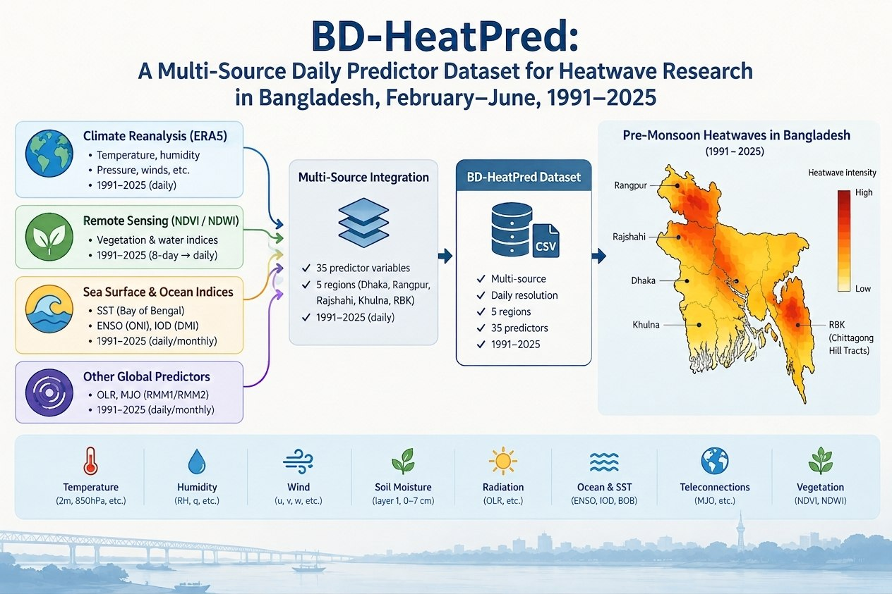
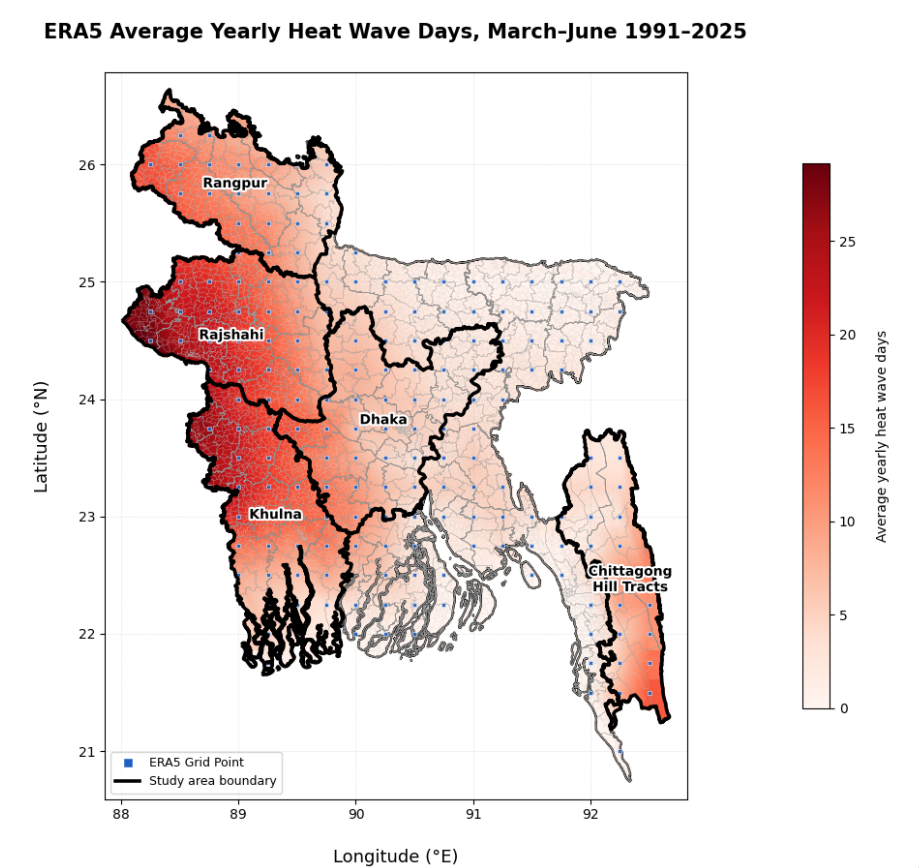

Hi! I am a fourth-year undergraduate student in the Department of Applied Mathematics at the University of Dhaka, Dhaka, Bangladesh.
Research Interests
Education
Bachelor of Science
Sept 2022 – Expected Dec 2026
Department of Applied Mathematics, University of Dhaka, Dhaka,
Bangladesh
Relevant Coursework: Programming in C++ · Discrete
Mathematics · Advanced Linear Algebra · Basic Statistics and
Probability · Numerical Methods I & II · Optimization Techniques
· Mathematical Models for Machine Learning
Undergraduate Project

Principal Component Analysis and Its Applications
Ongoing
- Developed a PCA-Based machine learning framework for predicting annual Heat Wave Days (HWDs) across Bangladesh using ERA5 reanalysis climate data.
- Evaluated the effectiveness of PCA for dimensionality reduction and prediction performance, and applied SHAP-based explainable AI to identify dominant atmospheric drivers associated with heat-wave occurrence across Bangladesh.
Supervisor:
Suchi Chaki
Research Projects

BD-HeatPred: A Multi-Source Daily Predictor Dataset for
Heatwave Research in Bangladesh,February-June, 1991-2025
Ongoing
- Developing a region-specific dataset for Bangladesh by integrating 35 atmospheric, land-surface, and global teleconnection predictors across five regions: Dhaka, Khulna, Rajshahi, Rangpur, and the Rangamati–Bandarban–Khagrachari (RBK).
Supervisor:
Suchi Chaki

BD-HeatPred-Based Heatwave Onset Prediction and Regional Driver
Analysis in Bangladesh
Ongoing
- Heatwave onset prediction in Bangladesh using the BD-HeatPred dataset, with regional driver analysis to identify the most influential predictors across five regions.
Supervisor:
Suchi Chaki
Skills and Tools
Programming
Python, C, C++, Dart, MATLAB
Data Analysis & Visualization
NumPy, Pandas, Matplotlib, Seaborn, Scikit-learn
ML & Deep Learning
PyTorch, Keras, Explainable AI (SHAP), PCA, mRMR
Computer Vision
OpenCV, Roboflow, Ultralytics YOLO
Climate & Geospatial Analysis
ERA5/ERA5-Land, NetCDF, Xarray, GeoPandas, GIS, Spatial Analysis,
Grid-Based Analysis, Remote Sensing (NDVI, NDWI), Google Earth
Engine(GEE), Climate Anomaly & Teleconnection Analysis(SST, ENSO,
IOD, MJO, OLR)
Web & Application Development
HTML, CSS, Flutter
Development & Research Tools
Git, GitHub, VS Code, PyCharm, LaTeX, Google Colab, Jupyter
Notebook, Canva